Thesis figure review
Figure numbers follow the paper and your latest feedback. Filenames retain stable IDs from the earlier round. Click a preview for the full PNG; PDF and SVG versions are beside it.
Figure 1 · File ID 1
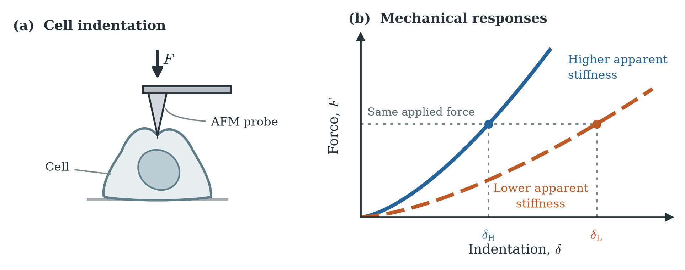
Similar cell appearances can conceal different mechanical responses. An AFM probe applies force to a cell; the same force produces less indentation in the higher-stiffness illustrative response. Schematic, not measured data.
PDF · SVG
Figure 2 · File ID 2
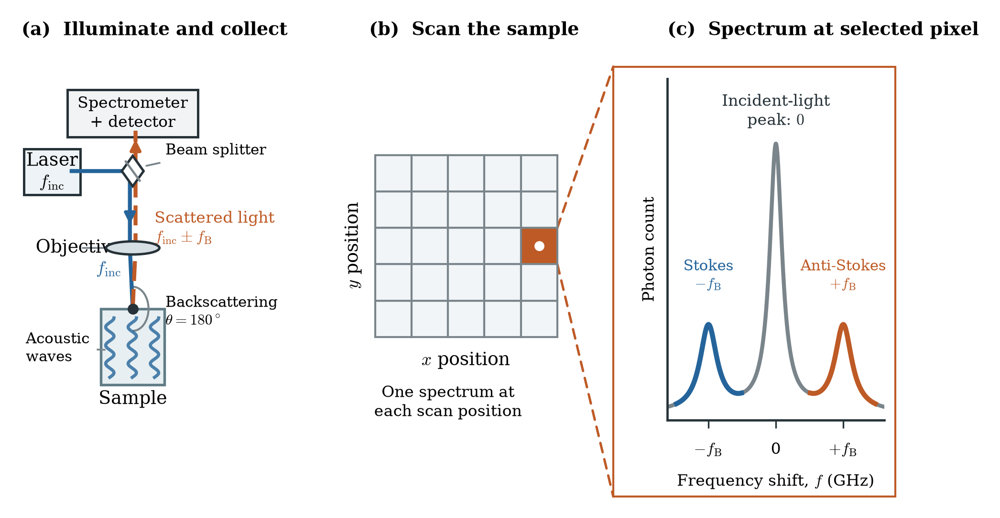
Brillouin microscopy produces a spectrum at each scan position. (a) Laser light is focused through the objective; backscattered light is sent through a beam splitter to a separate spectrometer and detector. Vertical wave motifs symbolise acoustic fluctuations, not particle trajectories. (b) A spatial scan contains many measurement positions. (c) Expanding guides connect one selected pixel to its cartoon photon-count spectrum. The peaks are elastic Rayleigh scattering and frequency-shifted Stokes and anti-Stokes scattering. Optical geometry, peak shapes and counts are schematic.
PDF · SVG
Figure 3 · File ID 3
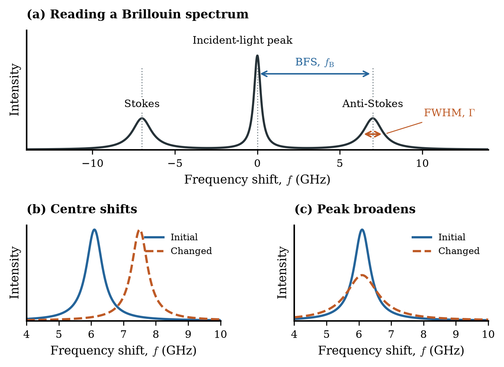
Spectral features introduced independently of material mixing. (a) BFS is the separation of a Brillouin peak from the incident-light frequency; FWHM is the width at half peak height. (b) A shift changes peak centre. (c) Broadening changes linewidth, with constant integrated area in this illustration. Curves are schematic; instrumental broadening must be distinguished from intrinsic damping.
PDF · SVG
Figure 4 · File ID 4
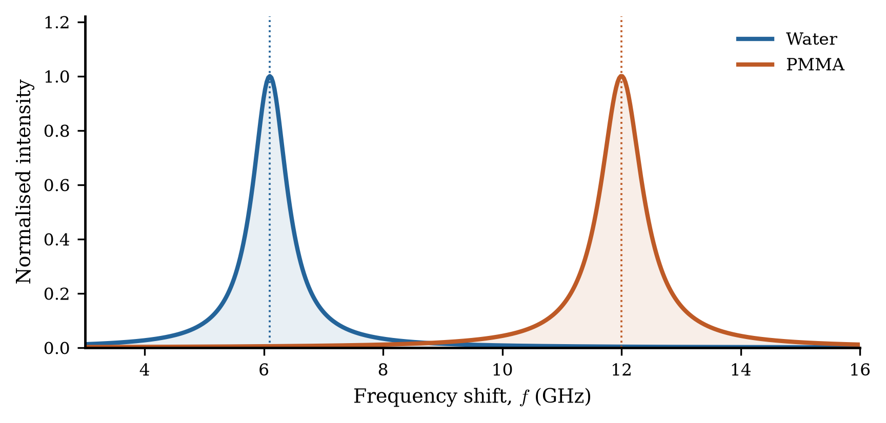
Schematic separated Brillouin responses illustrate how material identity can produce different BFS values. Water and Plexiglass are introductory examples, not the glycerol simulation calibration. Peak centres and widths are illustrative.
PDF · SVG
Figure 5 · File ID 5
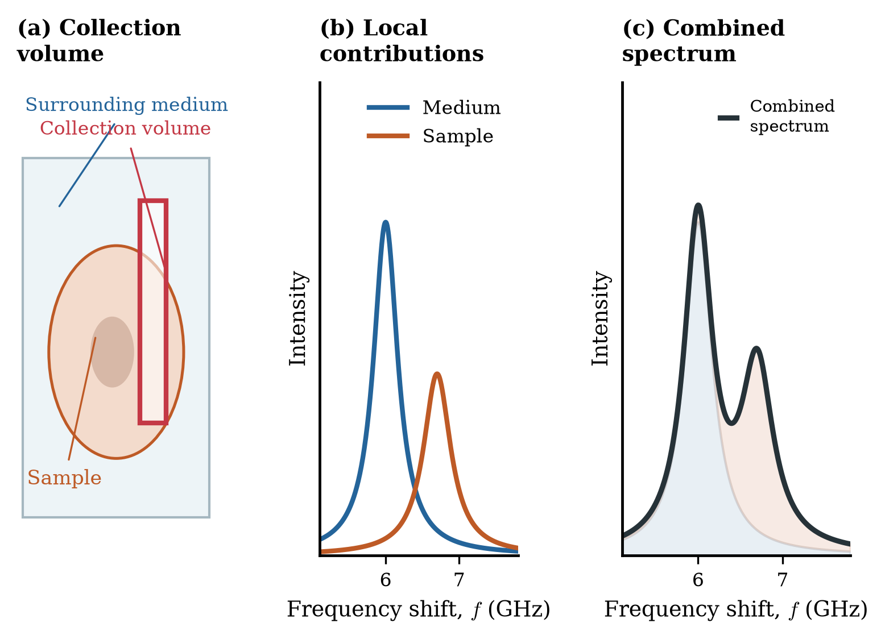
A finite collection region can contain both sample and surrounding medium. Their collection-weighted local spectra combine into one measured spectrum. Panels (b) and (c) use the same axes and contributions; the example is schematic, not a depth reconstruction.
PDF · SVG
Figure 6 · File ID 6
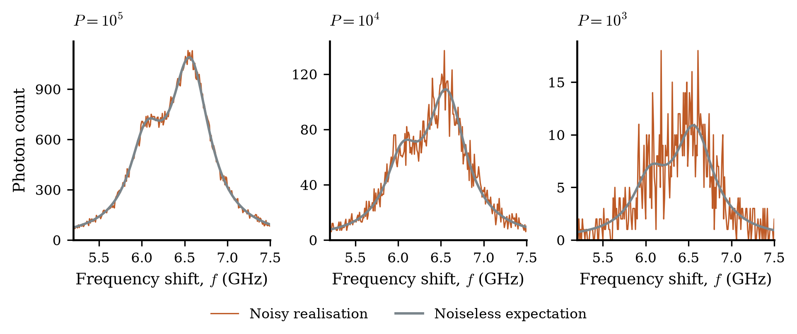
Shorter exposure increases relative photon shot noise. Each panel shows a connected Poisson-count realisation (orange) and a faint noiseless expected trace (blue), for the same mixed spectrum at fixed illumination and collection efficiency. The illustrative count scale is 1000 expected water-reference photons per second in the displayed 5.25–7.35 GHz band; these are simulated exposure times, not calibrated instrument times. Each vertical axis is in raw photon counts and therefore changes scale with exposure. No extra Gaussian noise is added.
PDF · SVG
Figure 7 · File ID 7
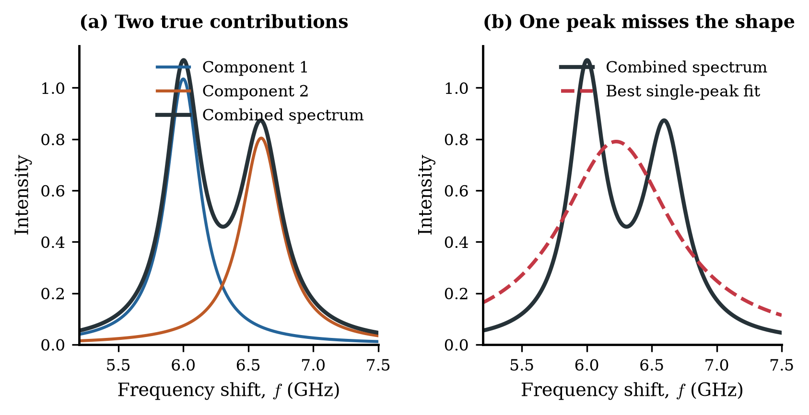
A single Lorentzian cannot exactly reproduce this deliberately chosen two-component sum. The plotted single-peak curve is a numerical least-squares fit to the same noiseless sum shown in panel (a). This example illustrates model mismatch, not a universal claim that every mixture is visibly separable. Closely overlapping components can also produce deceptively small residuals.
PDF · SVG
Figure 8 · File ID 8
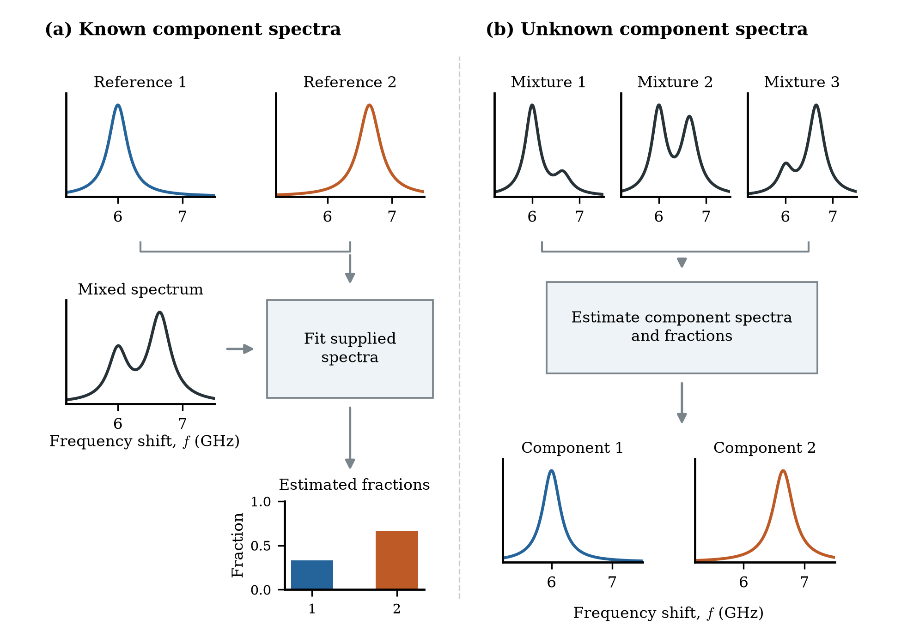
Known responses allow mixture contributions to be fitted. When responses are unknown, multiple mixed spectra provide variation from which component responses and contributions may be estimated, subject to the method assumptions. Every small spectrum is one continuous Brillouin-band curve, with frequency in GHz; outputs are illustrative, not benchmark results.
PDF · SVG
Figure 9 · File ID 9
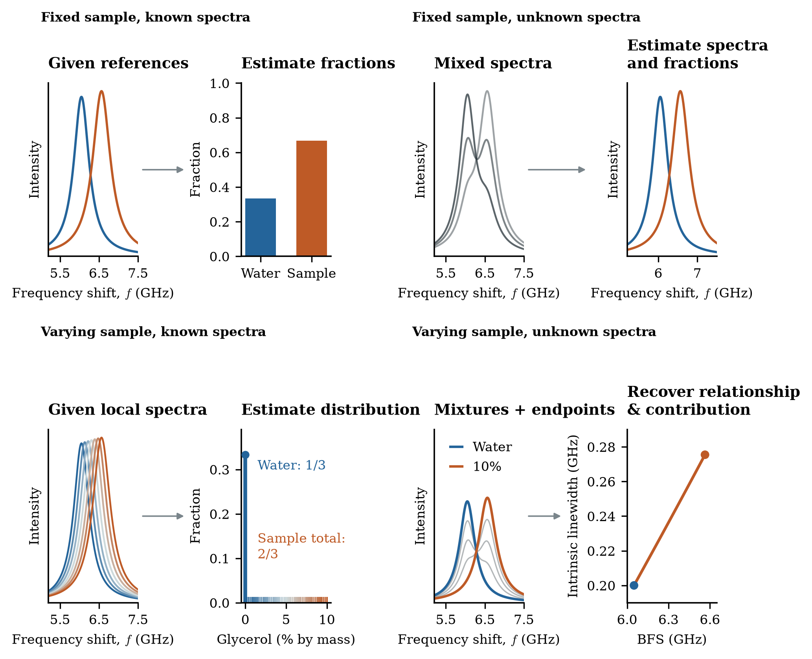
Four simulation configurations and their recovery targets. (1) Known fixed spectra are used to estimate mixture weights. (2) Unknown fixed spectra require estimation of component spectra and weights. (3) Known concentration-dependent spectra are used to estimate a concentration distribution. (4) Unknown varying spectra require estimation of contributions and spectral relationships. The final panel illustrates the prescribed BFS (blue dashed line, left axis) and intrinsic linewidth (orange solid line, right axis) versus glycerol mass percentage. All example outputs are schematic, not recovery results. Unknown-spectrum weights require intensity calibration to represent collection fractions; the final configuration does not imply uniquely recoverable absolute concentration.
PDF · SVG
Figure 10 · File ID 10
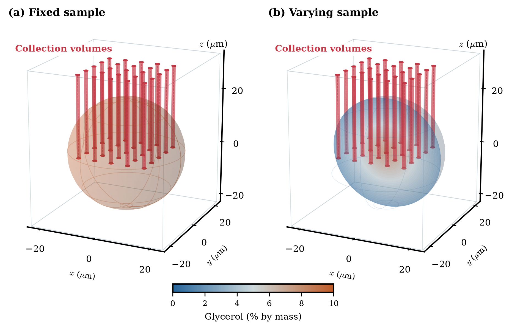
Three-dimensional prescribed sample models in surrounding water. The uniform sphere has 10% glycerol by mass; the cutaway gradient sphere increases from 0% at the boundary to 10% at the centre. The red cylinder array illustrates collection regions at multiple lateral scan positions, each with the finite axial collection range (30 micrometres, from z=0 to 30). The cutaway reveals a radial model field, not a reconstructed volume. Concentration laws are test functions, not physical diffusion models; dimensions are in micrometres.
PDF · SVG
Figure 11 · File ID 13
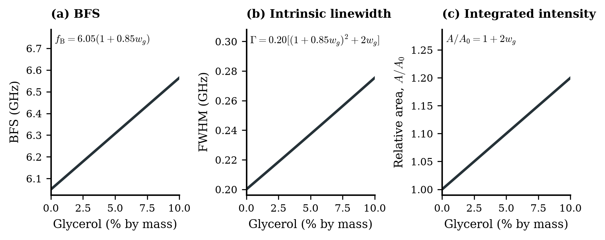
Chosen local response laws over the initial 0–10% glycerol mass range. BFS and intrinsic linewidth use the provisional laws specified in the methodology. Integrated intensity is now prescribed to rise linearly by 20% between 0% and 10% glycerol. This increasing intensity is an explicit modelling choice, not a measured concentration calibration. Peak area and peak height are distinct.
PDF · SVG
Figure 12 · File ID 11
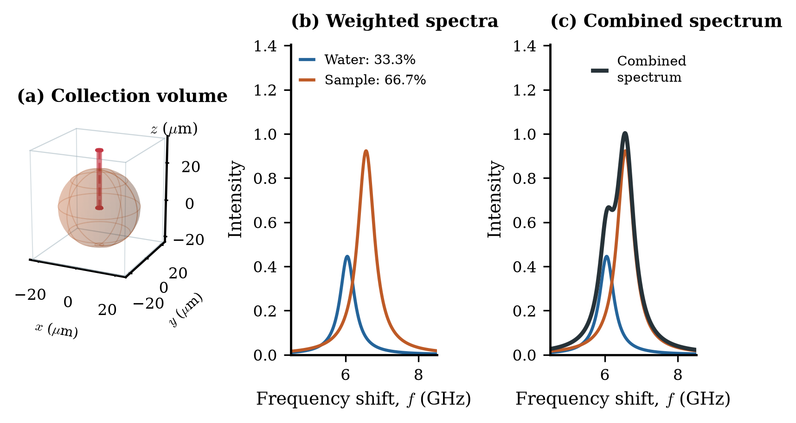
A single axial collection region contains water and homogeneous 10% glycerol solution. The central ray has collection fractions 1/3 water and 2/3 solution (33.3% and 66.7%); their full-band signal fractions are 29.4% and 70.6%. The coloured curves already include those weights and the chosen concentration-dependent areas; their exact sum is the black curve. These coefficients are collection fractions, not glycerol mass fractions or necessarily equal signal fractions. Spectra include the assumed instrument response.
PDF · SVG
Figure 13 · File ID 12
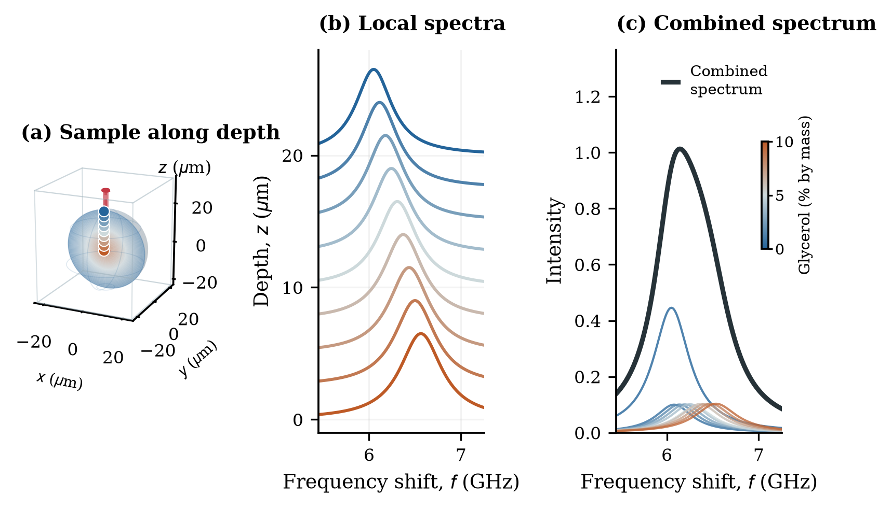
A concentration gradient produces different local spectra within one axial collection volume. Coloured sample points and curves represent depth positions, not separate lateral pixels. Local curves in panel (b) are individually scaled and vertically offset to show their shapes; these display offsets are not frequency shifts. Panel (c) groups the true depth-weighted signal into concentration bins and water; their exact sum is black. The colour bar identifies the concentration of the coloured contributions; it does not display additional spectra. The colours progress with glycerol mass fraction. The surrounding water contribution is retained.
PDF · SVG
Figure 14 · File ID 14
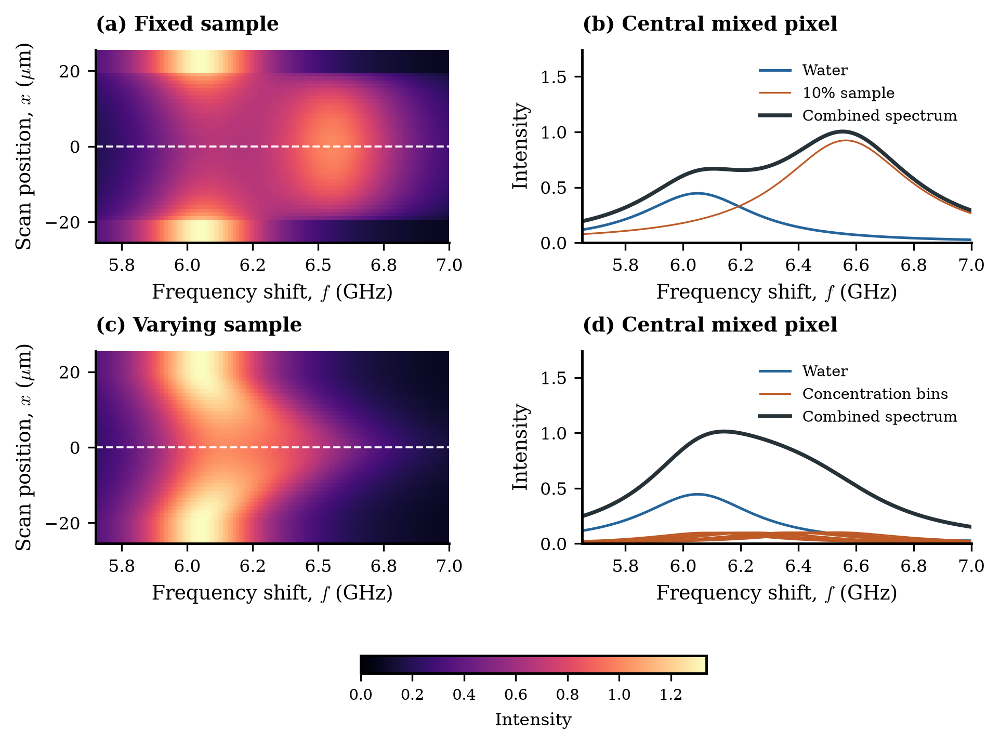
Example noiseless simulation datasets. Left: three-dimensional model fields with red axial collection indicators. Middle: spectra across the central lateral line, displayed over a cropped 5.65–7.00 GHz range; the complete simulated frequency axis remains 4.50–8.50 GHz. The white line selects x=y=0. Right: the coloured contributions for that one mixed pixel and their exact black sum. The fixed sample has two responses; the gradient sample is displayed as concentration-bin contributions plus water. These are forward-model results with instrument broadening and the chosen increasing intensity law, not measured data or reconstructed volumes. Both rows use common frequency and intensity scales.
PDF · SVG
Figure 15 · File ID 15
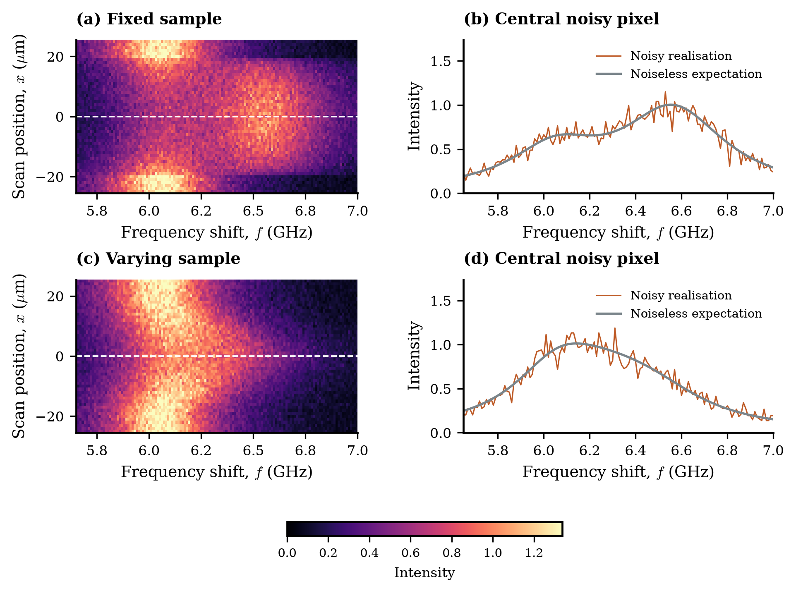
Poisson-noise counterparts of the noiseless datasets, with the same geometry, frequency window and heatmap colour limits. The reference photon budget is 10000 expected water photons over the complete 4.50–8.50 GHz band per pixel. Integer counts are divided by the known count scale and bin width for display as spectral density; the noise is sampled before this conversion. Colour saturation uses the noiseless heatmap limit for direct comparison. No Gaussian noise is added; these are simulation examples, not measured data.
PDF · SVG